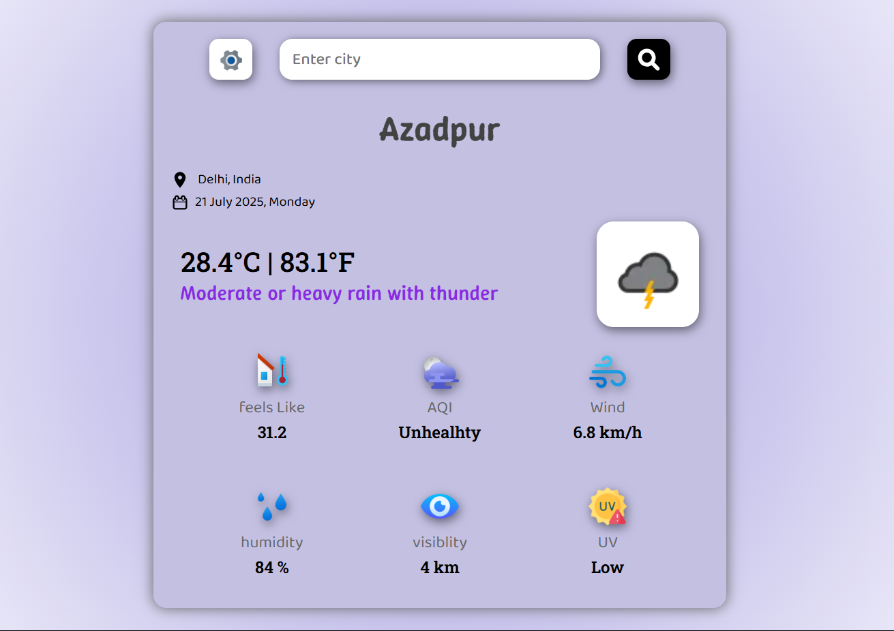

AtmoPulse is a fully responsive, smooth-animated weather forecasting web app built using JavaScript and the WeatherAPI. Enter any location to get real-time weather, temperature, AQI, UV index, and more — all wrapped in a sleek, modern interface!
✅ Live Weather Updates
✅ Dual Search Input (Search & Set Default Location)
✅ Air Quality Index (AQI) with intuitive health labels
✅ UV Index with dynamic risk levels
✅ Weather Icons & Animations
✅ Responsive UI for mobile, tablet, and desktop
✅ Modern UI/UX with smooth transitions
Looks great on all screen sizes — mobile 📱, tablet 💻, and desktop 🖥️!
| Frontend | API | Animations | Storage |
|---|---|---|---|
| HTML5 | WeatherAPI | CSS + JS | LocalStorage |
| CSS3 | |||
| JavaScript |


# Clone the repository
git clone https://github.com/DevloperAryan/Projects/atmopulse.git
# Navigate into the folder
cd atmopulse
# Open index.html in your browser
💡 Make sure to replace the API key in the JS file with your own WeatherAPI key.
const apiKey = 'YOUR_API_KEY_HERE';
💡 Use either of the two input fields:
localStorage)Atmopulse/
│
├── index.html
├── style.css
├── script.js
├── assets/
│ ├── weather-icons/
│ ├── loc-Icon.svg
│ └── calender.svg
| Parameter | Example |
|---|---|
| Temperature | `29°C |
| Weather | Partly Cloudy |
| AQI | Fair |
| UV Index | Moderate |
| Wind Speed | 18 km/h |
| Humidity | 62% |
| Visibility | 10 km |
Atmopulse automatically displays the default location and today’s date on load using JavaScript +
localStorage. No backend needed!
Aryan Kumar
📫 [Email] : aryankumar.linux@gmail.com
📎 Portfolio
If you like the project, consider ⭐ starring the repository! It helps a lot!